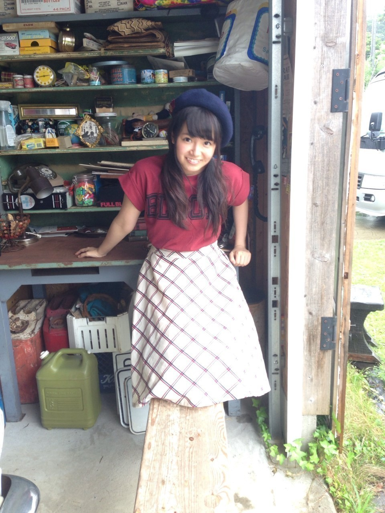

| 2014/10 30 Thu | ひめたん-OoO-その493 |

Secret HoneyさんのTwitterに
ひめたん登場していたことをスタッフさんから聞きました\( ˆoˆ )/♡
このワンピースだよ～
まだハロウィン当日 何着るか
迷ってるおにゃのこは
ぜひひめたんとおそろいしよ！
実は月刊エンタメで着た
このジャンパースカートも
Secret Honeyさんの\❁/

偶然なんだけど どちらも
三つ編みしてるね～
あ、そうそう
火曜日のめざましテレビに
登場しました(´pωq`)
観てくれたひとありがとう！
めざましジャンケンもやったよ～
予告してなくてごめんね
地元のおともだちからたくさん
連絡来て嬉しかった☆


ついでにエンタメのオフショット
のぎ天は久々の登場～
ゴルフサークル発足しました！
ゴルフみんなやったことある？
ひめは人生初ゴルフだったよ～
次回の横浜全握握手は
せいらりんとペアです(＊＾ω＾＊)
え！絶対楽しい！
このレーン絶対楽しいよ
このレーン絶対楽しい！
あ、そうそう
みなさんからのプレゼント
受け取りました(っ´ω`c)
ありがとう！大切にします♡

 ふと思ったのですが
ふと思ったのですが
ひめたんはピアノ弾けますか？
今となっては全く弾けませんが
一応6年間やってたよ(^o^)
乃木坂はピアノ経験ある人多いよね
男子でなで肩ってどう思いますか
いいと思う！
リュック大変なんだよね(´・ω・｀)
ひめたんはリュック好きなひとなので
応援します！頑張れなで肩男子！
ひめたんは好きな
かわいい系のキャラクターいますか？
くまのがっこうのジャッキーちゃん
ぼんぼんりぼんちゃん、マイメロちゃん♡
早稲田祭は出るんかな？？
出ます！楽しみ( ^o^ )
ひめたんはじめての学祭♡
月刊少女野崎くんで好きなキャラは～？
この質問ちょっと前にも
答えたことあったんだけども補足したい！
結月すき( ˇωˇ )
あんな子ひめの周りにはいないから惹かれる～
千代ちゃんも相変わらず好きだよ！
ひめたんの使ってる
リップクリームは何ですか？？
おそとではVaselineのチューブ、
おうちではVaselineの大きいやつ。
前に使ってたリップがなくなって
メイクさんに教えてもらいました～＊
日芽香の花言葉はなに？
好きな花はマーガレットだよ❁
ひめの代わりにどなたか
調べてみて(´pωq`)

いつもたくさんのコメント
ありがとうございます
みんなハロウィンの予定
教えてくれてありがとう！
なんかね今年のハロウィンは
平日なんだよねー
かぼちゃスイーツ食べるひと多かった～
ここ最近時間なくて
なんか今日の日記はそっけないなあ
ごめんね( >_< )
こんなノリの日もあってもいいかな～？
あー昔の自分に戻りたい！切実！
(＊´・ω・＊)
コメント(708)
2014/10/30 00:00